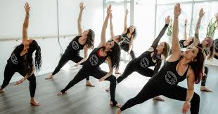

Project Information
This project is a rebrand of Milwaukee Yoga Social, focused on creating a cohesive and new modern visual identity for the brand. The goal was to elevate the brand while maintaining the same values they already represent.
Site Description
This website showcases the full rebranding process, including research, concept development, and final designs & mockups. This is a digital presentation of the project.
About the Company
Milwaukee Yoga Social is a community driven organization that brings people together through yoga events and social experiences. They emphasize connection, mindfulness, and inclusivity, creating a space where individuals can engage in both personal wellness and shared community moments.
MKE Yoga Social Photos
Here are some photos of Milwaukee Yoga Social events and their logo to give a better sense of the atmosphere and community they foster.

Designer Bio
As a designer, for this project I was focused on visual identity and branding, but in general with design I have a strong interest in aesthetics influenced by fashion, culture, and other media. I am interested in how design can be used to create a specific mood or feeling, and how it can be used to communicate messages and tell stories.